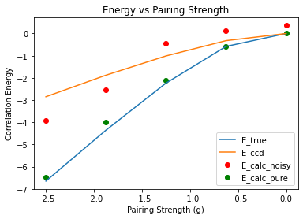

Quantum Computing and Quantum Mechanics for Many Interacting Particles
Seminar at Notre Dame, May 12, 2021.
What is this talk about?
The main aim is to give you a short and pedestrian introduction to our activities.
- MSU: Ben Hall, Jane Kim, Julie Butler, Danny Jammoa, Johannes Pollanen (Expt), Niyaz Beysengulov (Expt), Dean Lee, Scott Bogner, Heiko Hergert, Matt Hirn, Huey-Wen Lin, Alexei Bazavov, Angela Wilson, and Andrea Shindler
- UiO: Stian Bilek, Håkon Emil Kristiansen, Øyvind Schøyen Sigmundsson, Jonas Boym Flaten, Kristian Wold, Lasse Vines (Expt) and Marianne Bathen (Expt)
This work is supported by the U.S. Department of Energy, Office of Science, office of Nuclear Physics under grant No. DE-SC0021152 and U.S. National Science Foundation Grants No. PHY-1404159 and PHY-2013047.
Why? Basic motivation
How can we avoid the dimensionality curse? Many possibilities
- smarter basis functions
- resummation of specific correlations
- stochastic sampling of high-lying states (stochastic FCI, CC and SRG/IMSRG)
- many more
Machine Learning and Quantum Computing hold great promise in tackling the ever increasing dimensionalities. A hot new field is Quantum Machine Learning, see for example the recent textbook by Maria Schuld and Francesco Petruccione.
- Master of Science thesis of Stian Bilek, Quantum Computing: Many-Body Methods and Machine Learning, August 2020
- Master of Science thesis of Heine Åbø, Quantum Computing and Many-Particle Problems, June 2020
- Marianne EtzelmuellerBathen's PhD, December 2020
Basic activities, Overview
- Quantum Engineering
- Quantum algorithms
- Quantum Machine Learning
Short background
During the last two years we have started a large scientific activity on Quantum Computing and Machine Learning at Michigan State University in collaboration with several other universities in the US and in Europ.
This activity spans from the development of quantum-mechanical many-particle theories for studying systems of interest for making quantum computers, via the development of quantum algorithms for solving quantum mechanical problems to exploring quantum machine learning algorithms.
Quantum Engineering
- be scalable
- have qubits that can be entangled
- have reliable initializations protocols to a standard state
- have a set of universal quantum gates to control the quantum evolution
- have a coherence time much longer than the gate operation time
- have a reliable read-out mechanism for measuring the qubit states
- and many more
Candidate systems
- Superconducting Josephon junctions
- Single photons
- Trapped ions and atoms
- Nuclear Magnetic Resonance
- Quantum dots, expt at MSU
- Point Defects in semiconductors, expt at UiO
- more
Electrons (quantum dots) on superfluid helium
Electrons on superfluid helium represent a promising platform for investigating strongly-coupled qubits.
Therefore a systematic investigation of the controlled generation of entanglement between two trapped electrons under the influence of coherent microwave driving pulses, taking into account the effects of the Coulomb interaction between electrons, is of significant importance for quantum information processing using trapped electrons.
- Time-Dependent full configuration interaction theory
- Time-dependent Coupled-Cluster theory
- Designing quantum circuits
Entanglement
Entanglement is the fundamental characteristic that distinguishes quantum systems composed of two or more coupled objects from their classical counterparts. The study of entanglement in precisely engineered quantum systems with countably many degrees of freedom is at the forefront of modern physics and is a key resource in quantum information science (QIS). This is particularly true in the development of two-qubit logic for quantum computation. In fact, the generation of two-qubit entanglement has been demonstrated in a wide variety of physical systems used in present-day quantum computing, including superconducting circuits, tapped ions, semiconductor quantum dots, color-center defects in diamond, and neutral atoms in optical latticesjust to name a few.
More on Entanglement
Generating an entanglement between two quantum systems rely on exploiting interactions in a controllable way. The details in the interaction Hamiltonian between two systems defines the protocol schemes for two-qubit logic. In a superconducting circuits the interaction between qubits may arise from direct capacitive coupling between circuit element or by indirect coupling of two qubits to a common resonator (virtually populating resonator mode) which results in a non-local Hamiltonian in the form of exchange interaction. This allow to implement various schemes for entanglement, such as \( \sqrt{i\text{SWAP}} \), controlled-phase gate, resonator-induced phase gate, cross-resonance gate.
Entanglement gates in trapped ions and more
Entanglement gates in trapped ions are produced by means of the Coulomb interaction, where shared motional modes of two or more ions, entangled to their internal states, used for transferring excitations between ion qubits. This has been experimentally demonstrated.
In photonic quantum computing schemes two-qubit entangling operations are realized by nonlinear interactions between two photons scattering from quantum dots, plasmonic nanowires, diamond vacancy centers and others embedded into waveguides. Two-qubit gates in semiconductor quantum dots are based on spin-spin exchange interactions or generated by coupling to a superconducting resonator via artificial spin-orbit interaction.
Coulomb interaction
Coulomb interaction governed entanglement naturally can be realized in the system of electrons on the surface of superfluid helium, where qubit states are formed by in-plane lateral motional or out-of plane Rydberg states. Trapped near the surface of liquid helium these states have different spatial charge configurations and the wavefunctions of different electrons do not overlap. This results in a strong exchange free Coulomb interaction which depends on the states of the electrons. The lack of disorder in the systems also leads to slow electron decoherence, which has attracted interest to the system as a candidate for quantum information processing.
Electrons on helium is another qubit platform
Here 2 qubit gates have never been discussed in a proper manner.
The static Coulomb interaction arises from a virtual photon exchange process between two charge particles according to quantum electrodynamics. This results in a correlated motion of two charges generating quantum entanglement.
Surface state electrons (SSE)
Surface state electrons (SSE) 'floating' above liquid helium originates from quantization of electron's perpendicular to the surface motion in a trapping potential formed by attractive force from image charge and a large \( \sim \) 1 eV barrier at the liquid-vacuum interface. At low temperatures the SSE are trapped in the lowest Rydberg state for vertical motion some 11 nm above the helium surface, which is perfectly clean and has a permittivity close to that of vacuum. The weak interaction with enviroment, which is mainly governed by interaction with quantized surface capillary waves (ripplons) and bulk phonons, ensures long coherence times - a vital ingredient for any qubit platform. SSE's in-plane motion can be further localized by using microdevices on the length scales approaching the interelectron separation (at the order of one micron).
Setup Example

Computational Methods
As we are only studying a model comprised of two electrons restricted to move in a one-dimensional external potential we have employed the \emph{ab-initio} method configuration-interaction to compute the steady-state properties of the system. We have used a static, one-dimensional, grid-based basis set for the single-particle functions. This allows for flexibility in the choice of the external potential, and fits the interpolated potential particularly well.
The Hamiltonian of \( N \) interacting electrons confined by some potential \( v(r) \) can be written on general form
$$
\begin{equation}
\hat{H} = \sum_{i=1}^N \left(-\frac{1}{2}\nabla_i^2 + v(r_i) \right) + \sum_{i < j} \hat{u}(r_i, r_j),
\tag{1}
\end{equation}
$$
where \( \hat{u}(i,j) \) is the electron-electron (Coulomb) interaction.
More details
Many-body methods are commonly written in second-quantized form where the Hamiltonian takes the form
$$
\begin{equation}
\hat{H} = \sum_{pq} \mel{\psi_p}{\hat{h}}{\psi_q}\hat{a}_p^\dagger \hat{a}_q + \frac{1}{4}\sum_{pqrs} \mel{\psi_p \psi_q}{\hat{u}}{\psi_r \psi_s} \hat{a}_p^\dagger \hat{a}_q^\dagger \hat{a}_s \hat{a_r},
\tag{2}
\end{equation}
$$
where \( a_p^\dagger \) and \( a_p \) are creation and annihilation operators associated with the single-particle function \( \vert\psi_p\rangle \).
One-dimensional system
We consider a one-dimensional model where the confining potential is parametrized/obtained from finite element calculations.
The bare Coulomb interaction is divergent in 1D (REF) and it is customary to use a smoothed Coulomb interaction given by
$$
\begin{align}
u(x_1, x_2) = \frac{\alpha}{\sqrt{(x_1 - x_2)^2 + a^2}},
\tag{3}
\end{align}
$$
where \( \alpha \) adjusts the strength of the interaction and \( a \) removes the singularity at \( x_1 = x_2 \).
The single-particle functions are chosen as the eigenfunctions of the single-particle Hamiltonian
$$
\begin{equation}
\left( -\frac{d^2}{dx^2}+v(x) \right) \psi_p(x) = \epsilon_p \psi_p(x).
\tag{4}
\end{equation}
$$
Many-particle States
It should be noted that this implies that Slater determinants built from the single-particle are eigenfunctions of the non-interacting many-body Hamiltonian
$$
\begin{equation}
\left( \sum_{i=1}^N -\frac{1}{2}\nabla_i + v(r_i) \right) \vert\Phi_p\rangle = E_p \vert\Phi_p\rangle,
\tag{5}
\end{equation}
$$
where \( \vert\Phi_p\rangle = \vert\psi_{p_1\rangle\cdots \psi_{p_N}} \) and
$$
\begin{equation}
E_p = \sum_{i=1}^N \epsilon_{p_i}.
\tag{6}
\end{equation}
$$
Setup of States, One-body States
Setup of States, Two-body States
Quantum algorithms for solving many-body problems, simple model
The pairing model consists of \( 2N \) fermions that occupy \( N \) of \( P \) energy levels. The fermions can only change energy level by pair. It's Hamiltonian is
$$
\begin{align}
H=\sum_{p\sigma} \delta_pa_{p\sigma}^{\dagger}a_{p\sigma}+\sum_{pq}g_{pq}a_{p+}^{\dagger}a_{p-}^{\dagger}a_{q-}a_{q+}
,
\tag{7}
\end{align}
$$
where \( p \) and \( q \) sum over the set \( \{1,2,...,P\} \) and \( \sigma \) sums over the set \( \{+,-\} \). Also, \( a \) and \( a^{\dagger} \) are the fermionic creation and annihilation operators.
More on the pairing model
If one assumes that energy levels are never half filled (always occupied by either 0 or 2 fermions), then the pairing model is equivalent to a system of \( N \) pairs of fermions that occupy \( P \) doubly-degenerate energy levels
$$
\begin{align}
H = 2\sum_{p} \delta_pA_p^{\dagger}A_p+\sum_{pq}g_{pq}A_p^{\dagger}A_q,
\tag{8}
\end{align}
$$
where \( p \) and \( q \) sum from over the set \( \{1,...,p\} \) and
$$
\begin{align*}
A_p &= a_{p-}a_{p+}
\\
A^{\dagger}_p &= a^{\dagger}_{p+}a^{\dagger}_{p-},
\end{align*}
$$
are the fermionic pair creation and annihilation operators.
Unitary Coupled Cluster Ansatz
The unitary coupled cluster ansatz is
$$
\begin{align}
\vert\Psi\rangle=e^{T-T^{\dagger}}\vert\Phi\rangle,
\tag{9}
\end{align}
$$
and
$$
\begin{align}
\vert\Psi\rangle=\exp{(T_1-T_1^{\dagger})}\vert\Phi\rangle,
\tag{10}
\end{align}
$$
where \( \vert\Phi\rangle \) is a Fock state and \( T=\sum_{k=1}^AT_k \).
Technicalities
Since our Hamiltonian only has one body terms. We will truncate to \( T=T_1 \) where
$$
\begin{align}
T_1=\sum_{ia}t_i^aA_a^{\dagger}A_i.
\tag{11}
\end{align}
$$
Thus, we define our ansatz as
$$
\begin{align}
\vert\Psi(\theta)\rangle=\exp\left\{\sum_{ia}t_i^a\left(A_a^{\dagger}A_i-A_aA_i^{\dagger}\right)\right\}\vert\Phi\rangle.
\tag{12}
\end{align}
$$
We define the set of angles \( \theta=\{t_i^a \ | \ i < F, \ a \geq F\} \) where \( F \) is the number of particles below the Fermi level.
Mapping Pair Operators to Pauli Gates
The Jordan-Wigner transformation from pair operators to Pauli matrices is
$$
\begin{align}
A_p &= \frac{X_p+iY_p}{2}
\tag{13}\\
A_p^{\dagger} &= \frac{X_p-iY_p}{2},
\tag{14}
\end{align}
$$
where \( P_i\equiv \left(\bigotimes_{n=1}^{i-1}I\right)\otimes P\otimes\left(\bigotimes_{n=i+1}^NI\right) \) where \( P \in \{X,Y,Z\} \) and \( N \) is the total number of particles.
Mapping the Ansatz
Applying this transformation
$$
\begin{align}
A_a^{\dagger}A_i-A_aA_i^{\dagger}
&=\left(\frac{X_a-iY_i}{2}\right)\left(\frac{X_a+iY_i}{2}\right)
\tag{15}\\
&-\left(\frac{X_a+iY_i}{2}\right)\left(\frac{X_a-iY_i}{2}\right)
\tag{16}\\
&=\frac{i}{2}\left(X_aY_i-Y_aX_i\right),
\tag{17}
\end{align}
$$
The ansatz becomes
$$
\begin{align}
\vert\Psi(\theta)\rangle
=\exp\left\{\frac{i}{2}\sum_{ia}t_i^a\left(X_aY_i-Y_aX_i\right)\right\}\vert\Phi\rangle.
\tag{18}
\end{align}
$$
Trotter approximation
To first order Trotter approximation we have
$$
\begin{align}
\tag{19}
\vert\Psi(\theta)\rangle
&\approx\prod_{ia}\exp\left\{\frac{i}{2}t_i^a\left(X_aY_i-Y_aX_i\right)\right\}\vert\Phi\rangle
\\
&\equiv
\prod_{ia}A_{ia}\vert\Phi\rangle.
\tag{20}
\end{align}
$$
Mapping the Hamiltonian
First, we rewrite the Hamiltonian
$$
\begin{align}
H
&=2\sum_{p}\delta_pa_p^{\dagger}a_p+\sum_{pq}g_{pq}a_p^{\dagger}a_q
\tag{21}\\
&=\sum_{p}\left(2\delta_p+g_{pq}\right)a_p^{\dagger}a_p+\sum_{p\neq q}g_{pq}a_p^{\dagger}a_q.
\tag{22}
\end{align}
$$
Applying the transformation to the first term in the Hamiltonian
$$
\begin{align}
a^{\dagger}_pa_p=\left(\frac{X_p-iY_p}{2}\right)\left(\frac{X_p+iY_p}{2}\right)=\frac{I_p-Z_p}{2}.
\tag{23}
\end{align}
$$
More manipulations
For the second term, first note that
$$
\begin{align}
\sum_{p\neq q}a_p^{\dagger}a_q
=\sum_{p < q}a_p^{\dagger}a_q+\sum_{q < p}a_p^{\dagger}a_q
=\sum_{p < q}a_p^{\dagger}a_q+a_pa_q^{\dagger},
\tag{24}
\end{align}
$$
which we arrive at by swapping the indices \( p \) and \( q \) in the second sum and combining the sums. Applying the transformation
$$
\begin{align}
a_p^{\dagger}a_q+a_pa_q^{\dagger}
&=\left(\frac{X_p-iY_p}{2}\right)\left(\frac{X_q+iY_q}{2}\right)
\tag{25}\\
&+\left(\frac{X_p+iY_p}{2}\right)\left(\frac{X_q-iY_q}{2}\right)
\tag{26}\\
&=\frac{1}{2}\left(X_pX_q+Y_pY_q\right).
\tag{27}
\end{align}
$$
Hamiltonian
Thus, the Hamiltonian can be written in terms of Pauli matrices as
$$
\begin{align*}
H = \sum_p\left(2\delta_p+g_{pq}\right)\left(\frac{I_p-Z_p}{2}\right)
+\sum_{p < q}g_{pq}\frac{X_pX_q+Y_pY_q}{2}
\end{align*}
$$
Exact and Calculated Correlation Energies vs Pairing Strength for \( (p,n)=(4,2) \)

Note: \( p \) is the number of doubly-degenerate levels and \( n \) is the number of pairs of fermions.
Exact and Calculated Correlation Energies vs Pairing Strength for \( (p,n)=(5,2) \)

Quantum Machine Learning
The emergence of quantum computers has opened up even more possibilities within the field of machine learning. Since quantum mechanics is known to create patterns which are not believed to be efficiently produced by classical computers, it is natural to hypothesize that quantum computers may be able to outperform classical computers on certain machine learning tasks. There are several interesting approaches to machine learning from a quantum computing perspective - from running existing algorithms or parts of these more efficiently, to exploring completely new algorithms that are specifically developed for quantum computers. Recent results show that quantum neural networks are able to achieve a significantly better effective dimension than comparable classical neural networks.
More on Quantum Machine Learning
A few examples of existing algorithms that exhibit a speed up on quantum computers are \( k \)-nearest neighbors, support vector machines and \( k \)-means clustering.
Among algorithmic approaches that are specifically designed for quantum computers we find so-called parameterized quantum circuits. These are hybrid quantum-classical methods where the input-output relation is being produced by a quantum computer, while a classical computer is responsible for updating the model parameters during training.
Present Plans
- Quantum circuit optimization
- Quantum Boltzmann Machines
So-called Boltzmann Machines (BMs) define a machine learning method that aims to model probability distributions and has played a central role in the development of deep learning methods.
It has since been shown that BMs are universal approximators of discrete probability distributions, meaning that they can approximate any discrete distribution arbitrarily well. Our research group has lately conducted several investigations of BMs applied to quantum-mechanical problems, with several interesting results.
Conclusions and where do we stand
Lots of interesting research directions.
- We have used many-body methods like time-dependent full configuration interaction theory to design quantum circuits, in close collaboration with experimentalists
- Successfully applied various quantum algorithms to many-body systems
- Quantum machine learning, just started
- What could be of interest to the Gemini center?